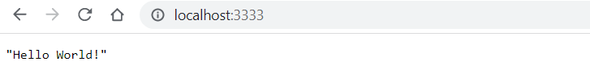

Run your container
The easiet way to start a container is using podman run command.
podman run -t -p 3333:3333 localhost/helloworld-python
Here it is in action. Note that port the application is listening on ( Port:3333)
PS C:\Users\aniru\workspace\github\python-podman> podman run -p 3333:3333 localhost/hellowrold-python
Trying to pull localhost/hellowrold-python:latest...
Error: initializing source docker://localhost/hellowrold-python:latest: pinging container registry localhost: Get "https://localhost/v2/": dial tcp 127.0.0.1:443: connect: connection refused
PS C:\Users\aniru\workspace\github\python-podman> podman run -p 3333:3333 localhost/helloworld-python
* Serving Flask app 'helloworld'
* Debug mode: off
WARNING: This is a development server. Do not use it in a production deployment. Use a production WSGI server instead.
* Running on all addresses (0.0.0.0)
* Running on http://127.0.0.1:3333
* Running on http://10.0.2.100:3333
Press CTRL+C to quit
10.0.2.100 - - [06/Jan/2023 04:52:58] "GET / HTTP/1.1" 200 -
10.0.2.100 - - [06/Jan/2023 04:52:58] "GET /favicon.ico HTTP/1.1" 404 -
Check the browser
Navigate to http://127.0.0.1:3333 on your browser
See results

Running container in background
You can also use podman run command with -d option to run it in the background
PS C:\Users\aniru\workspace\github\python-podman> podman run -dt -p 3333:3333 localhost/helloworld-python
3bad5052037cbae1d3b32567faf6e945f91bfc484cf5f2a09808418ba7aa9540
You can check status using podman ps command just like docker ps
PS C:\Users\aniru\workspace\github\python-podman> podman ps
CONTAINER ID IMAGE COMMAND CREATED STATUS PORTS NAMES
3bad5052037c localhost/helloworld-python:latest python ./hellowor... 4 seconds ago Up 4 seconds ago 0.0.0.0:3333->3333/tcp zen_poitras
Manage container lifecycle
Once you have the ContainerID you can manage container lifecycle using podman start|stop|restart commands
PS C:\Users\aniru\workspace\github\python-podman> podman restart 3bad5052037c
3bad5052037c
PS C:\Users\aniru\workspace\github\python-podman> podman ps
CONTAINER ID IMAGE COMMAND CREATED STATUS PORTS NAMES
3bad5052037c localhost/helloworld-python:latest python ./hellowor... 39 seconds ago Up 3 seconds ago 0.0.0.0:3333->3333/tcp zen_poitras